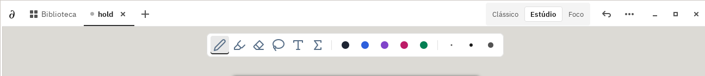
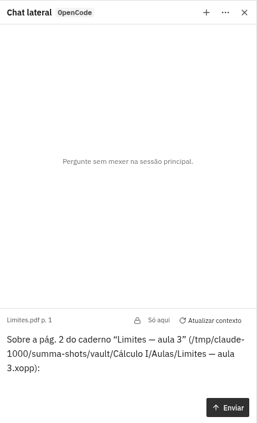
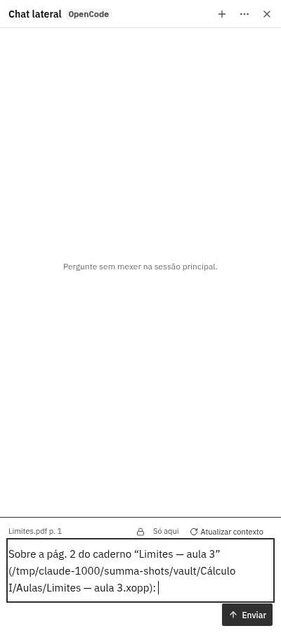

Ambitus com a cara do Summa
Protótipo das quatro reclamações da última rodada. Os tokens (cores, cinzas, cantos, ícones) foram copiados do desk/style.css e do desk/icons.mjs do Summa, e não reinventados: o Ambitus passa a desenhar com as mesmas peças. As capturas marcadas “hoje” são dos apps de verdade.
1. Interruptores do Summa
A causa da feiura é uma linha só. O token --r-round vale 50%, e 50% numa caixa de 40×20 não dá uma pílula: dá uma elipse. O botão de 14px também vira oval e parece encostar na borda. O teste radius-tokens do Summa obriga o alternador a usar esse token, por isso ninguém viu.
Elipse, botão oval.
É o interruptor do Carbon, que o protótipo r2 do Summa já desenhava. O canto é a metade da altura (10px) e o botão é um círculo de verdade.
Usa o mesmo --r-sm de botões e campos e não precisa de exceção no teste. Fica mais duro.
Clique neles: os interruptores funcionam. Na opção A, o Summa ganha uma exceção declarada no teste de raios, como já existe para a barra de progresso. O mesmo interruptor passa a valer no painel de cadernos (notebooks-ink), que usa os mesmos tokens. No Ambitus, o novo “Segurar para endireitar” do menu Ferramentas é um item de menu com ✓ e não leva interruptor.
2. Paleta do Estúdio
Hoje os ícones são os do Xournal++: finos, em cinza-azulado, e de outra família. As cores são o azul, o violeta, o rosa e o verde que o Summa tirou dos acentos em 12/11. A proposta usa os ícones Lucide do Summa (traço 2, cinza --muted, preto quando escolhido) e os botões e estados do .icon-btn (32px, canto de 4px, fundo --selected no ativo). A cor escolhida ganha o anel de 2px do seletor de acento das Configurações.

#161616 (o --fg)
Violeta #8044ca (o acento)
Azul #2548c7
Laranja #c2410c
Verde #0f7b55
Azul, laranja e verde são as séries --plot-1/2/3 das figuras do tutor: as cores que o Summa já usa sobre papel branco. Na folha a tinta não muda com o tema, porque a página é sempre branca. Passe o mouse e clique na paleta.
- Ícones: lápis, marca-texto, borracha, laço, texto (Lucide
type) e Σ para LaTeX. Os SVGs entram no Ambitus como ícones simbólicos do tema, na pastaui/iconsLucide/, com o aviso ISC ao lado, como o Summa faz emassets/licenses/lucide.txt. - Espessura: os três pontos ficam em
--muted, sem cor própria. - Fundo atrás das páginas: hoje é o bege
#dcdad5do Xournal++. A proposta é o--stagedo Summa (#f4f4f4no claro,#262626no escuro), cinza neutro como pede ostyle.css(“a página branca não pode destoar”). Só vale como padrão novo; quem mudou a cor nas Preferências fica como está. - A mesma troca de ícones vale para a barra do modo Clássico, numa segunda etapa, porque mexe em mais ícones.
3. Barra do topo sem o ∂
A primeira coisa da barra passa a ser a aba Biblioteca. O ∂ continua no ícone do app, no Sobre e na tela da biblioteca vazia.
4. Chat lateral solto igual ao preso
No Summa o chat solto já é o mesmo elemento (o nó do DOM muda de janela), então conversa, rascunho e estado são os mesmos. Comparando lado a lado no app de verdade, a diferença está em duas coisas feitas só para a janela solta:
body>#sidechat #sidechat-prompt:focus-visibledesenha um anel preto de 2px em volta do campo. No preso, o foco só pinta a linha de cima do compositor.- Trazer de volta está escondido no ⋯ → “Trazer de volta”. A faixa “Chat em outra janela” na Mesa só foca a janela solta e não traz o chat de volta.


Janela solta: o cabeçalho e o compositor ficam idênticos aos do preso. O único botão a mais é “Trazer de volta à Mesa” (ícone panel-right-close), ao lado do ×. O × continua como no preso: fecha o chat. Fechar a janela pelo sistema devolve, como já acontece hoje.
Na Mesa, clicar na faixa “Chat em outra janela” traz o chat de volta para a coluna (hoje só foca a janela). A dica diz isso. O ⋯ → “Trazer de volta” continua lá.
E o caminho do arquivo no rascunho
Era a recomendação que você aprovou. O rascunho fica só com Sobre a pág. 2 do caderno “Limites — aula 3”:, e o caderno entra como contexto na linha de cima do compositor (a mesma linha do “Limites.pdf p. 1”). O caminho vai ao tutor junto da mensagem, sem aparecer no texto. Está no protótipo acima.